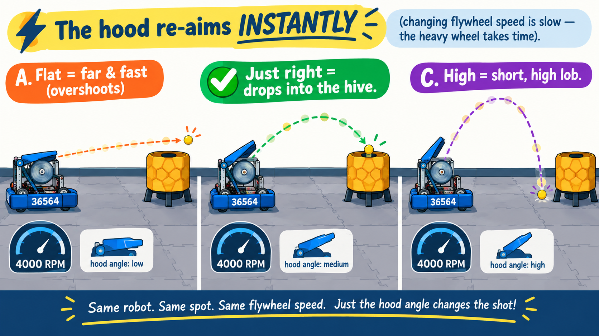

Your flywheel now holds a rock-steady speed — every shot leaves at the same power. But consistent isn't the same as on target. To hit the hive from anywhere on the field you need to change where the ball lands. That's aiming, and it's the last piece of the shooter.

You could change where a shot lands by changing the flywheel speed instead — but the flywheel is heavy, and changing its RPM takes time (that's the whole reason it sags after a shot). The hood is light: tilt it and the new angle is there instantly. So the pro move is to hold the flywheel at one steady speed and do your fine aiming with the hood — near-instant, no waiting on inertia.
A hood needs to hold a precise angle and hold it steady against the ball hammering past it. Teams usually drive it with a rack and pinion: a small round gear (the pinion) on the servo horn meshes with a curved row of teeth (the rack) on the back of the hood. Turn the pinion a little and the hood tilts a little — geared down so tiny servo moves become smooth, fine angle changes.
Back in the indexer lesson you met two kinds of servo. The feeder was a CR servo — a
“Spinner” that only knows a speed and has no idea where it is. The hood is the other kind: a
positional servo, a “Pointer” that goes to an exact angle and holds it. That's
exactly what aim needs — you tell it an angle, it goes there and stays. In code that's Servo with
setPosition(...), not CRServo with setPower(...).
Same shooter, now with an Angle slider next to the flywheel controls. Spin up with Y, then fire and drag the angle. Watch how a flat hood throws long and low — too flat and it clanks the front wall — while a high hood lobs short. Notice you can also change reach with Target (the flywheel speed), but the hood re-aims instantly where the flywheel takes time to change speed.
At a fixed speed there's a band of hood angles that scores. Too flat and the shot slams the wall; too high and it falls short. Somewhere in the middle it arcs cleanly in. Change the Target and the whole sweet spot shifts — more speed lets a higher, safer arc still reach. That interplay of angle and speed is exactly what real shooter tuning is.
Hood.javaA new subsystem is waiting for you in Hood.java. The constants and the constructor are already written
— note the constructor grabs a Servo (positional), not a CRServo. You'll fill in the state,
the commands, and the one line that applies the angle.
The hood needs a field to remember its current setting — a number from 0.0 (lowest angle)
to 1.0 (highest). Start it in the middle.
Hood.java⩢ Copyprivate double position = 0.5; // 0.0 = lowest angle, 1.0 = highest; start in the middleaim() and getPosition()aim() takes the stick amount and creeps the angle up or down, clamped to the safe range — the same
“trim a little each loop” pattern your flywheel target uses. getPosition() just reports the
setting for telemetry.
Hood.java⩢ Copy/** Aim the hood up or down. Pass the stick amount (right = positive). */
public void aim(double amount) {
if (Math.abs(amount) < AIM_DEADZONE) return; // ignore tiny drift
position += amount * AIM_STEP; // creep the angle up or down
position = Math.max(HOOD_MIN, Math.min(HOOD_MAX, position)); // keep it in range
}
/** The current hood setting (0..1), for telemetry. */
public double getPosition() {
return position;
}Here's where the “Pointer” earns its name. In update() you send the stored setting to the
servo with setPosition(...). A positional servo drives itself to that exact angle and holds
it — no speed, no guessing.
Hood.java⩢ Copyhood.setPosition(position);Your indexer's feeder is a CRServo and its update calls feeder.setPower(...) — a
speed. Your hood is a Servo and its update calls hood.setPosition(...) — an
angle. Same subsystem shape, different servo, different verb. Picking the right kind of servo for the job is
a real design decision.
The Robot class owns every subsystem. Add the hood field, then build it in the constructor and add it
to the subsystem list so its update() runs every loop.
Robot.java⩢ Copypublic final Hood hood;Robot.java⩢ Copyhood = new Hood(hardwareMap);
subsystems.add(hood);The right stick already trims the flywheel target up/down. Now the left/right axis aims the hood. Up/down = how hard (speed); left/right = how high (angle). One stick controls the whole shot.
Open the hood loop in the OpMode and pass the stick's left/right value to aim().
MecanumDrive.java⩢ Copy// Right stick LEFT/RIGHT aims the hood (up/down trims the flywheel target).
robot.hood.aim(gamepad1.right_stick_x);You can now aim by hand. Down the road you'll put the shooter on a turret and use the camera's AprilTags to find the hive — so the robot aims itself. Everything you just built (a steady speed and a precise angle) is what makes that auto-aim possible.